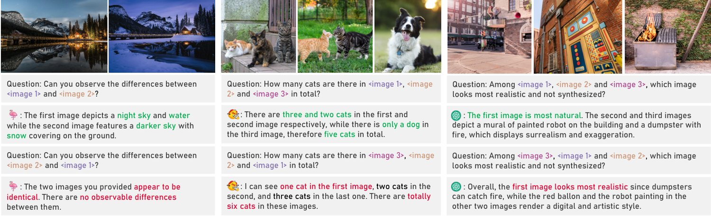
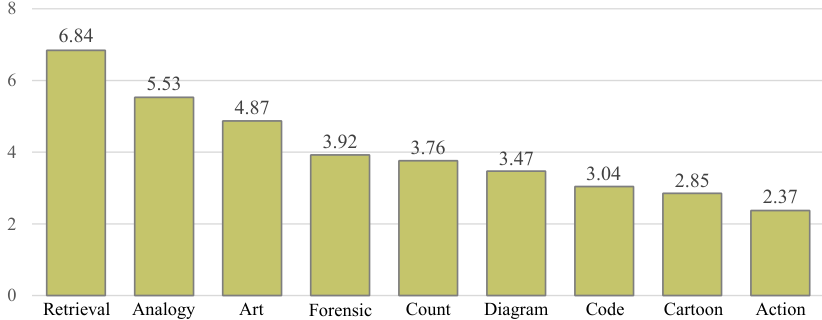

Identifying and Mitigating Position Bias of Multi-image Vision-Language Models

The evolution of Large Vision-Language Models (LVLMs) has progressed from single to multi-image reasoning. Despite this advancement, our findings indicate that LVLMs struggle to robustly utilize information across multiple images, with predictions significantly affected by the alteration of image positions. To further explore this issue, we introduce Position-wise Question Answering (PQA), a meticulously designed task to quantify reasoning capabilities at each position. Our analysis reveals a pronounced position bias in LVLMs: open-source models excel in reasoning with images positioned later but underperform with those in the middle or at the beginning, while proprietary models show improved comprehension for images at the beginning and end but struggle with those in the middle. Motivated by this, we propose SoFt Attention (SoFA), a simple, training-free approach that mitigates this bias by employing linear interpolation between inter-image causal attention and bidirectional counterparts. Experimental results demonstrate that SoFA reduces position bias and enhances the reasoning performance of existing LVLMs. The code will be available https://github.com/xytian1008/sofa.
The advent of Large Vision-Language Models (LVLMs) [1, 34, 5, 2, 24] has catalyzed the development of various text-grounded visual applications, including visual question answering [3, 16, 36], code generation [52, 37, 8], and story telling [13, 26]. Open-source LVLMs such as LLaVA [34], BLIP2 [28], and InternVL [11] have demonstrated competitive performance on single-image tasks like VQAv2 [16], OKVQA [38], and MMMU [64]. However, these LVLMs are limited in their capacity to analyze inter-image differences and relationships, as well as to process temporal information. Consequently, recent LVLMs, such as Flamingo [2, 4], Idefics [23, 24, 22], and Emu2 [51], have incorporated image-text interleaved data during training to enable ability to tackle multi-image tasks [19, 56, 15, 50].
大型视觉语言模型（LVLM）[1, 34, 5, 2, 24] 的出现催生了各类文本驱动的视觉应用，包括视觉问答 [3, 16, 36]、代码生成 [52, 37, 8] 与故事生成 [13, 26]。LLaVA [34]、BLIP2 [28]、InternVL [11] 等开源 LVLM 已在 VQAv2 [16]、OKVQA [38]、MMMU [64] 等单图像任务上展现出具有竞争力的表现。然而，这些 LVLM 在分析图像间差异与关系、以及处理时序信息方面能力有限。因此，Flamingo [2, 4]、Idefics [23, 24, 22]、Emu2 [51] 等近期的 LVLM 在训练中引入了图文交错数据，以获得处理多图像任务的能力 [19, 56, 15, 50]。
Despite the increasing scale and performance of LVLMs, the interpretation of how they reason across multiple images remains a mystery. In fact, we might find some hints in the topic of natural language processing (NLP). Recent research in NLP has highlighted retrieval-augmented generation (RAG) [25, 44, 71], which aims to enable large language models (LLMs) to reason across multiple documents to answer questions. However, [35] find that LLMs tend to effectively comprehend documents positioned at the beginning and end of the input, often neglecting the middle sections. Similarly, in LLM-as-a-judge [55, 48], [68] find that LLMs used to evaluate two model responses tend to favor the first one, regardless of content. This phenomenon, where the model’s reasoning capability is influenced by the segment position, is referred to as position bias [35, 42, 60].
尽管 LVLM 的规模与性能不断提升，它们如何在多张图像之间进行推理仍是个谜。事实上，我们或许能从自然语言处理（NLP）领域的研究中找到一些线索。NLP 近期的研究聚焦于检索增强生成（RAG）[25, 44, 71]，其目标是让大语言模型（LLM）跨多个文档进行推理以回答问题。然而，[35] 发现 LLM 往往能有效理解位于输入开头与结尾的文档，却常常忽略中间部分。类似地，在以 LLM 为裁判（LLM-as-a-judge）[55, 48] 的设置中，[68] 发现用于评判两条模型回复的 LLM 往往偏爱第一条，而与其内容无关。这种模型的推理能力受片段位置影响的现象，被称为位置偏差 [35, 42, 60]。
Motivated by the research above, a natural question arises: does position bias exist in LVLMs? Specifically, we seek to determine whether LVLMs can robustly make use of information across multiple images. To investigate this, we begin by evaluating LVLMs on established multi-image benchmarks [19, 56, 15, 50]. We find that simply changing the order of presented images may significantly alter the predictions for most LVLMs, leading to considerable variation in benchmark accuracy. Fig. 1 provides examples of questions and model responses. For instance, in difference spotting [56], swapping two images causes OpenFlamingo [4] to miss distinctions, while in a simple counting task [19], reordering images leads Idefics2 [24] to incorrect reasoning. This positional sensitivity is apparent even in GPT-4o [1], a leading proprietary model.
受上述研究启发，一个自然而然的问题出现了：LVLM 中是否也存在位置偏差？具体而言，我们希望确定 LVLM 能否稳健地利用多张图像中的信息。为此，我们首先在已有的多图像基准 [19, 56, 15, 50] 上评测 LVLM。我们发现，仅仅改变图像的呈现顺序，就可能显著改变多数 LVLM 的预测，导致基准准确率出现相当大的波动。图 1 给出了若干问题与模型回答的示例。例如，在差异识别 [56] 中，交换两张图像会使 OpenFlamingo [4] 漏掉其中的差别；而在一个简单的计数任务 [19] 中，重新排列图像顺序会导致 Idefics2 [24] 推理错误。这种位置敏感性即便在 GPT-4o [1] 这一领先的专有模型中同样明显。
The above motivational study reveals an unfortunate fact: building upon LLMs, LVLMs may inherit the notorious position bias from their language component. This bias manifests as the model’s tendency to excel at reasoning visual information from certain positions, while exhibiting weaknesses at others, compromising robustness and reliability in predictions. To further investigate which positions display strong understanding and which reveal weaknesses, i.e., identifying the pattern of such position bias, we introduce Position-wise Question Answering (PQA). Unlike most multi-image tasks that assess holistic comprehension, PQA requires LVLMs to reason consistently across each image and produce position-wise responses. This approach enables us to measure position-wise accuracy and analyze the model’s reasoning capacity across different positions.
上述动机研究揭示了一个令人遗憾的事实：LVLM 构建于 LLM 之上，可能从其语言部分继承了这一声名狼藉的位置偏差。该偏差表现为模型倾向于擅长对某些位置上的视觉信息进行推理，而在其他位置上表现薄弱，从而损害预测的稳健性与可靠性。为了进一步考察哪些位置上理解力强、哪些位置暴露出弱点，即识别这种位置偏差的模式，我们提出逐位置问答（PQA）。与多数评测整体理解的多图像任务不同，PQA 要求 LVLM 对每一张图像都作出一致的推理，并给出逐位置的回答。这一做法使我们能够度量逐位置准确率，并分析模型在不同位置上的推理能力。
Our analysis reveals that most open-source models, e.g., OpenFlamingo [4] and Idefics2 [24], exhibit a pronounced recency bias, demonstrating stronger reasoning capabilities for images presented later while underperforming on those in the middle or at the beginning. In contrast, proprietary models like GPT-4o [1] show enhanced understanding of images at the beginning and end, while neglecting those in the middle, a pattern consistent with previous findings in LLMs [35]. This observation is further corroborated by Fig. 1, where LVLMs tend to reason incorrectly about images positioned in poor-performing areas.
我们的分析显示，OpenFlamingo [4] 与 Idefics2 [24] 等多数开源模型表现出明显的近因偏差，即对靠后呈现的图像推理能力更强，而对位于中间或开头的图像表现不佳。相反，GPT-4o [1] 等专有模型对开头与结尾图像的理解更强，却忽略中间的图像，这一模式与先前在 LLM 中的发现一致 [35]。图 1 进一步佐证了这一点：LVLM 倾向于对处于低性能区域的图像作出错误推理。
The existence of position bias significantly compromises model robustness and undermines accuracy across various multi-image tasks. Inspired by this, we aim to investigate the underlying mechanical causes and mitigate this issue. Specifically, we notice that in most LVLMs, the hidden states of image tokens are heavily influenced by their relative positions due to inter-image causal attention. In particular, image tokens are treated as a type of special text tokens where 1) images appearing later may interact with preceding ones; 2) images at the beginning are isolated, lacking access to global context. This autoregressive setup implicitly imposes a semantic order on the presented images, amplifying their positional information. To address this, we introduce SoFt Attention (SoFA), a training-free approach to mitigate position bias across various LVLMs. SoFA reduces the dependency of image hidden states on positional information by simply performing linear interpolation between inter-image causal attention and its bidirectional counterparts. Experimental results indicate that SoFA effectively equilibrates the reasoning capabilities of LVLMs across various positions, achieving average accuracy improvements of on existing multi-image benchmarks.
位置偏差的存在严重损害了模型的稳健性，并削弱了其在各类多图像任务上的准确率。受此启发，我们希望探究其底层的机制性成因并加以缓解。具体而言，我们注意到在多数 LVLM 中，由于图像间的因果注意力，图像词元的隐状态在很大程度上受其相对位置影响。尤其是，图像词元被当作一类特殊的文本词元来处理，由此产生两种情况：1）靠后出现的图像可以与前面的图像交互；2）位于开头的图像则被孤立，无法获取全局上下文。这种自回归设定隐式地为所呈现的图像施加了一种语义顺序，放大了它们的位置信息。为此，我们提出 SoFt Attention（SoFA），一种无需训练、可缓解各类 LVLM 中位置偏差的方法。SoFA 通过在图像间因果注意力与其双向对应形式之间作简单的线性插值，来降低图像隐状态对位置信息的依赖。实验结果表明，SoFA 能有效均衡 LVLM 在各个位置上的推理能力，在现有多图像基准上取得 的平均准确率提升。
In summary, our contributions are as follows:
总而言之，我们的贡献如下：
Despite the significant potential of LVLMs in multi-image applications, we find that position bias, a well-explored phenomenon in NLP, has emerged as a potential bottleneck in the development of LVLMs, substantially impacting model robustness and reliability.
• 尽管 LVLM 在多图像应用中潜力巨大，我们发现位置偏差——这一在 NLP 中已被充分探讨的现象——正在成为 LVLM 发展的潜在瓶颈，显著影响模型的稳健性与可靠性。
We further identify such position bias and discover that most open-source models demonstrate a pronounced recency bias, whereas proprietary models tend to struggle in middle positions.
• 我们进一步识别了这种位置偏差，并发现多数开源模型表现出明显的近因偏差，而专有模型则在中间位置上表现吃力。
We introduce SoFA, a straightforward training-free approach designed to mitigate the position bias inherited from pre-trained LVLMs, and substantiate its effectiveness through experimental validation.
• 我们提出 SoFA，一种直接易行、无需训练的方法，用于缓解从预训练 LVLM 继承而来的位置偏差，并通过实验验证了其有效性。
图 2：打乱图像位置后多次评测的结果。我们记录了最低、最高与平均准确率（左纵轴），以及表现最好与最差两次评测之间的预测不一致率（右纵轴）。
Large Vision-Language Models. Existing LVLMs are generally composed of a vision encoder [43, 65], an LLM [54, 53, 12], and a bridging projector [27, 7, 2] that facilitates interaction between the two. Conventional LVLMs, pre-trained on image-text pairs [46] and fine-tuned through preference [33, 40] or instruction tuning [27, 41], demonstrate substantial success in applications like dialogue [5, 11], question answering [58, 69], and domain-specific tasks [39, 47]. However, constrained by their training data, these models primarily support single-image reasoning during inference. Recently, the integration of image-text interleaved data [23, 70] has enabled multi-image reasoning capabilities, encompassing image comparison [56, 21], association [19, 15], temporal relationship analysis [29], and emerging properties of multi-modal in-context learning [67, 30]. Nonetheless, limited research has delved into how LVLMs perform reasoning across multiple images or the underlying mechanisms driving this process.
大型视觉语言模型。现有 LVLM 通常由视觉编码器 [43, 65]、LLM [54, 53, 12] 以及促进二者交互的桥接投影器 [27, 7, 2] 构成。传统的 LVLM 在图文对上预训练 [46]，并通过偏好优化 [33, 40] 或指令微调 [27, 41] 进行微调，在对话 [5, 11]、问答 [58, 69] 与领域专用任务 [39, 47] 等应用中取得了显著成效。然而受训练数据所限，这些模型在推理时主要支持单图像推理。近来，图文交错数据 [23, 70] 的引入使多图像推理成为可能，涵盖图像比较 [56, 21]、关联 [19, 15]、时序关系分析 [29]，以及多模态上下文学习这一新兴特性 [67, 30]。尽管如此，极少有研究深入探究 LVLM 如何在多张图像上进行推理，或驱动这一过程的底层机制是什么。
Position Bias in LLMs. Position bias, an inherent side effect of long-context input, has increasingly captured the attention of NLP researchers. The pioneering work on this issue, notably [35], reveals that when LLMs process multiple documents, they often concentrate on those at the beginning and end while disregarding much of the information in between, i.e., a phenomenon termed “lost in the middle”. A related issue has also been identified in LLM-as-a-judge [55, 48], where [68] observe that LLMs tasked with evaluating multiple model responses tend to favor the first one, irrespective of its content. Recent studies have begun to explore methods to mitigate or circumvent position bias in LLMs [60, 63, 42, 45]. However, to the best of our knowledge, few studies have examined the effects of position bias within multi-modal applications, specifically regarding its implications for LVLMs.
LLM 中的位置偏差。位置偏差是长上下文输入的一种固有副作用，正日益引起 NLP 研究者的关注。关于该问题的开创性工作，尤其是 [35]，揭示了 LLM 在处理多个文档时往往集中于开头与结尾的部分，而忽略其间的许多信息，这一现象被称为“中部丢失”（lost in the middle）。在以 LLM 为裁判 [55, 48] 的设置中也发现了相关问题：[68] 观察到，被要求评判多条模型回复的 LLM 往往偏爱第一条，而与其内容无关。近期研究已开始探索缓解或规避 LLM 中位置偏差的方法 [60, 63, 42, 45]。然而据我们所知，鲜有研究考察位置偏差在多模态应用中的影响，特别是它对 LVLM 意味着什么。
Position Bias in LVLMs. While systematic research on position bias in LVLMs is still lacking, recent studies have indirectly underscored the influence of positions on LVLMs through various findings. For instance, in multi-modal in-context learning, studies [9] and [6] reveal that demonstration images placed at the beginning contribute minimally to LVLM performance. Additionally, in assessing long-context capabilities, [61] reports that LVLMs attain particularly high accuracy when key information appears at the end of the input sequence, with similar results observed in [59] and [57]. However, previous research has neither thoroughly analyzed this position bias nor proposed solutions to address it. In contrast, this study systematically investigates position bias in both open-source and proprietary models and introduces an effective mitigation strategy.
LVLM 中的位置偏差。尽管关于 LVLM 位置偏差的系统性研究仍然缺乏，近期研究已通过各类发现间接凸显了位置对 LVLM 的影响。例如，在多模态上下文学习中，[9] 与 [6] 的研究揭示，置于开头的演示图像对 LVLM 性能的贡献极小。此外，在评估长上下文能力时，[61] 报告称当关键信息出现在输入序列末尾时，LVLM 的准确率特别高，[59] 与 [57] 也观察到了类似结果。然而，此前的研究既没有充分分析这种位置偏差，也没有提出解决办法。相比之下，本研究系统地考察了开源与专有模型中的位置偏差，并提出了一种有效的缓解策略。
图 3：PQA 任务上的结果。我们报告了图像数量分别为 5、10、15 与 20 四种情形下各位置的准确率。准确率越高，表明该位置上的推理能力越强；准确率越低，则对应表现不佳的区域。
In this section, we investigate whether the position bias observed in LLMs extends to LVLMs. We start by empirically confirming the existence of position bias in LVLMs through a motivational study, revealing their poor robustness to image position changes (§3.1). Subsequently, we analyze the nature of this bias by evaluating and quantifying the reasoning capabilities of LVLMs regarding different positions (§3.2). These insights contribute to a deeper understanding and interpretation of LVLMs’ reasoning behavior and common failure cases.
在本节中，我们考察 LLM 中观察到的位置偏差是否也延伸至 LVLM。我们首先通过一项动机研究实证确认 LVLM 中存在位置偏差，揭示其对图像位置变化的低稳健性（§3.1）。随后，我们评测并量化 LVLM 在不同位置上的推理能力，以此分析这种偏差的性质（§3.2）。这些认识有助于更深入地理解与解释 LVLM 的推理行为及常见失效情形。
To assess the existence of position bias, we conduct a simple motivational experiment, as shown in Fig. 2.
为评估位置偏差是否存在，我们开展了一项简单的动机实验，如图 2 所示。
Experimental Setup. We select four representative multi-image LVLMs: OpenFlamingo [4], Idefics2 [24], LLaVA-NeXT-Interleave11 1 For brevity, we refer to LLaVA-NeXT-Interleave as LLaVA-NeXT. [27], GPT-4o [1], and conduct evaluations across established multi-image benchmarks, including BLINK [15], Mantis-Eval [19], MuirBench [56], and MIRB [66]. To ensure clarity, we select partial tasks from these benchmarks that feature position-agnostic questions, wherein the positions of the images do not affect the answers to the questions. See §5.1 for the selected tasks and details. To explore the influence of image positions on the results, we perform multiple evaluations per benchmark, with the positions of the images shuffled in each iteration.
实验设置。我们选取四个具有代表性的多图像 LVLM：OpenFlamingo [4]、Idefics2 [24]、LLaVA-NeXT-Interleave11 1 为简洁起见，我们将 LLaVA-NeXT-Interleave 简称为 LLaVA-NeXT。 [27]、GPT-4o [1]，并在已有的多图像基准上进行评测，包括 BLINK [15]、Mantis-Eval [19]、MuirBench [56] 与 MIRB [66]。为保证清晰性，我们从这些基准中挑选了部分任务，这些任务的问题与位置无关，即图像的位置不会影响问题的答案。所选任务与细节见 §5.1。为探究图像位置对结果的影响，我们在每个基准上进行多次评测，每次迭代都打乱图像的位置。
Metric. We record the minimum, maximum, and average accuracy across these evaluations, which directly reflects the influence of positions on the performance of LVLMs. Furthermore, we assess the prediction inconsistency between the best and worst-performing evaluations, quantifying the proportion of examples exhibiting conflicting predictions across the two evaluations by changing positions.
度量指标。我们记录这些评测中的最低、最高与平均准确率，这直接反映了位置对 LVLM 性能的影响。此外，我们评估表现最好与最差两次评测之间的预测不一致率，用以量化因改变位置而在两次评测中给出相互冲突预测的样本所占比例。
Results. As illustrated in Fig. 2, for most open-source LVLMs, the prediction inconsistency between the best and worst-performing evaluations approaches , suggesting that merely altering the positions of the presented images may result in an amount of the model’s predictions being changed. Such pronounced sensitivity to positional information results in highly unstable performance. For example, OpenFlamingo’s accuracy on BLINK can vary significantly, reaching at its peak and dropping to at its lowest, indicating an accuracy span of up to with position changes. GPT-4o, the state-of-the-art proprietary model, although showcasing superior performance, also displays a lack of robustness to positional variations, leading to a prediction inconsistency of around .
结果。如图 2 所示，对多数开源 LVLM 而言，表现最好与最差两次评测之间的预测不一致率接近 ，这表明仅仅改变图像的呈现位置，就可能导致模型相当一部分预测发生改变。这种对位置信息的高度敏感造成了极不稳定的性能表现。例如，OpenFlamingo 在 BLINK 上的准确率波动显著，最高可达 ，最低跌至 ，意味着随位置变化的准确率跨度达 。GPT-4o 作为当前最先进的专有模型，虽然性能优越，但同样对位置变化缺乏稳健性，其预测不一致率约为 。
To qualitatively explore this issue, we present examples in Fig. 1 that illustrate prediction conflicts arising from alterations in image positions. For instance, when prompted to identify the differences between two images, OpenFlamingo fails to extract fine-grained distinctions upon swapping their positions. Similarly, in the task of object counting, Idefics2 mistakenly identifies a dog as a cat due to the repositioning of images. GPT-4o demonstrates a comparable issue, where rearranging the image options alters both its answer and the accompanying rationale.
为定性地探究这一问题，我们在图 1 中给出了若干示例，展示因图像位置改变而引发的预测冲突。例如，当被要求识别两张图像之间的差异时，OpenFlamingo 在二者位置对调后无法提取出细粒度的差别。类似地，在物体计数任务中，Idefics2 因图像重新排位而把一只狗误认成猫。GPT-4o 也表现出类似问题：重排图像选项会同时改变它的答案与相应理由。
The quantitative results and qualitative examples above imply biased reasoning across positions from LVLMs. To have a closer look at such position bias, we aim to identify models’ reasoning capabilities at different image positions.
上述定量结果与定性示例都暗示 LVLM 在不同位置上的推理是有偏的。为了更仔细地审视这种位置偏差，我们着手识别模型在不同图像位置上的推理能力。
However, existing tasks have been restricted to evaluating models’ holistic comprehension of multiple images, lacking the means to systematically analyze their fine-grained understanding of each individual position. Specifically, these tasks provide coarse ground truth answers, such as option symbols or numeric values, but do not offer individual rationales for each image, making it challenging to quantify the model’s reasoning across different positions. To address this gap, we introduce Position-wise Question Answering (PQA), a carefully designed task that assesses the position-wise reasoning capabilities of LVLMs. In PQA, each question prompts LVLMs to reason independently across all images, generating a distinct response for each. This approach 1) ensures task-level neutrality with respect to any particular position and 2) enables quantification of LVLMs’ reasoning performance for each position.
然而，现有任务仅限于评测模型对多张图像的整体理解，缺乏系统分析其对每个单独位置之细粒度理解的手段。具体而言，这些任务给出的是粗略的真值答案，如选项符号或数值，而未提供针对每一张图像的单独理由，因而难以量化模型在不同位置上的推理。为填补这一空白，我们提出逐位置问答（PQA）——一项精心设计、用于评估 LVLM 逐位置推理能力的任务。在 PQA 中，每个问题都促使 LVLM 对全部图像独立地进行推理，并为每张图像生成各自的回答。这一做法 1）保证了任务层面对任何特定位置的中立性，2）使 LVLM 在每个位置上的推理表现可以被量化。
Specifically, taking object counting as an example, we employ the following query template:
具体而言，以物体计数为例，我们采用如下查询模板：
Each query consists of an instruction (I) and a question (Q), where the former prompts the model to generate position-wise responses (A) following a specified output format. We gather responses from LVLMs as a structured list, with each element representing a particular position. This enables us to track position-wise accuracy, where a higher accuracy reflects stronger model capability at a given position, while lower indicates areas of relative weakness.
每个查询由一条指令（I）与一个问题（Q）组成，前者要求模型按照指定的输出格式生成逐位置的回答（A）。我们把 LVLM 的回答收集为一个结构化列表，其中每个元素对应一个特定的位置。这使我们能够追踪逐位置准确率：准确率越高，反映模型在该位置上的能力越强；准确率越低，则表明该位置是相对薄弱的区域。
Construction of position-wise examples. Since in PQA, each image is semantically independent of others, a PQA example essentially consists of several single-image instances that share the same question. This allows us to easily build position-wise examples from single-image benchmarks. Specifically, we select VQAv2 [16], a substantial single-image dataset that encompasses a diverse array of everyday topics and features both multiple-choice and open-ended questions. Initially, we identify and consolidate single-image examples with identical questions to create a question set, wherein each question corresponds to multiple images. Subsequently, we reformulate these questions into PQA format according to the above-mentioned template.
逐位置样本的构造。由于在 PQA 中每张图像在语义上彼此独立，一个 PQA 样本实质上由若干共享同一问题的单图像实例构成。这让我们可以便捷地从单图像基准构造逐位置样本。具体而言，我们选用 VQAv2 [16]——一个规模可观、涵盖丰富日常话题并同时包含多选与开放式问题的单图像数据集。首先，我们识别并合并问题相同的单图像样本，构造出一个问题集合，其中每个问题对应多张图像。随后，我们按照上述模板把这些问题改写为 PQA 格式。
Experimental Setup. We utilize the same LVLMs as previously mentioned and conduct evaluations on the proposed PQA task. Additionally, we also consider random guessing, where binary choice and numeric questions are answered randomly with yes or no, or with an integer value. We examine four scenarios with varying numbers of images: 5, 10, 15, and 20, collecting 1,000 examples for each scenario. Furthermore, to maintain fairness, we augment each example by shuffling the image positions four times, resulting in a total of 5,000 examples. In contrast to prior settings that evaluate holistic performance, we provide separate accuracy metrics for each position in this analysis.
实验设置。我们使用与前文相同的 LVLM，在所提出的 PQA 任务上进行评测。此外，我们还考虑了随机猜测的基线：二选一问题与数值问题分别以 yes 或 no、以及一个整数值随机作答。我们考察图像数量分别为 5、10、15 与 20 的四种情形，每种情形收集 1,000 个样本。此外，为保证公平，我们对每个样本随机打乱图像位置四次进行扩充，共得到 5,000 个样本。与先前评测整体性能的设置不同，本分析给出每个位置上单独的准确率指标。
Results. Fig. 3 displays the results of LVLMs on the PQA task, from which we may derive the following insights:
结果。图 3 展示了 LVLM 在 PQA 任务上的结果，从中我们可以得出以下几点认识：
1) Open-source LVLMs exhibit recency bias, whereas proprietary models struggle in middle positions. For open-source models, a stronger reasoning capability is observed for images positioned at the end, while significant underperformance is noted in the middle and beginning. For example, with 10 images, the accuracy of OpenFlamingo varies by nearly between the far left and far right positions (). In contrast, proprietary models, i.e., GPT-4o, reveal a typical U-shaped curve, highlighting pronounced weaknesses in the middle positions.
1）开源 LVLM 表现出近因偏差，而专有模型在中间位置表现吃力。对开源模型而言，位于末尾的图像上推理能力更强，而中间与开头位置则明显表现不佳。例如，在 10 张图像的情形下，OpenFlamingo 在最左与最右两个位置之间的准确率相差近 （）。相反，专有模型 GPT-4o 呈现出典型的 U 形曲线，凸显其在中间位置上的明显弱点。
2) Position bias becomes more pronounced as the number of images increases. For instance, with 20 images, the accuracy gap for OpenFlamingo between the two ends reaches (). Notably, at this stage, OpenFlamingo seems to nearly lost its reasoning capability for most of the beginning images, achieving results only marginally better than random guessing ().
2）位置偏差随图像数量增加而愈发明显。例如，在 20 张图像的情形下，OpenFlamingo 两端之间的准确率差距达到 （）。值得注意的是，此时 OpenFlamingo 对开头的大部分图像似乎几乎丧失了推理能力，其结果仅略优于随机猜测（）。
3) Relationship to position bias in LLMs. Previous research [35] shows that LLMs often overlook information in middle positions when processing multiple documents, a phenomenon termed “lost in the middle”. Our findings suggest this effect persists for GPT in multi-image reasoning. However, for open-source models, the primacy position advantage appears to diminish, showing a marked decaying trend from the end to beginning. Whether the position bias in LVLMs is correlated with that of their LLM backbones remains an interesting question for further exploration.
3）与 LLM 中位置偏差的关系。此前的研究 [35] 表明，LLM 在处理多个文档时常会忽略中间位置的信息，这一现象被称为“中部丢失”。我们的发现表明，这一效应在 GPT 的多图像推理中依然存在。然而对开源模型而言，首因位置的优势似乎消失了，呈现出从末尾向开头的显著衰减趋势。LVLM 中的位置偏差是否与其 LLM 主干中的偏差相关，仍是一个值得进一步探索的有趣问题。
In this section, we first analyze the underlying causes of position bias (§4.1). Then we introduce SoFA, a straightforward, training-free approach to mitigate this issue (§4.2).
在本节中，我们首先分析位置偏差的底层成因（§4.1），随后介绍 SoFA——一种直接易行、无需训练、用于缓解该问题的方法（§4.2）。
To investigate the origins of position bias, we need to first determine what contributes to the positional information in LVLMs. In NLP, it is generally believed that position embeddings [45, 49] and causal attention [42, 60] are the primary mechanisms enabling the sequential structure of input. Formally,
为探究位置偏差的根源，我们需要先确定是什么造就了 LVLM 中的位置信息。在 NLP 中，通常认为位置嵌入 [45, 49] 与因果注意力 [42, 60] 是支撑输入序列结构的主要机制。形式化地，
| (1) | ||||
where , , and represent the queries, keys, and values, respectively. refers to the input tokens, encompassing both image and text types, denotes the position embedding of , which is integrated into the attention via the position encoding function , denotes the causal mask, which ensures autoregressive generation.
其中 、 与 分别表示查询、键与值。 指输入词元，涵盖图像与文本两类； 表示 的位置嵌入，它通过位置编码函数 被整合进注意力计算； 表示因果掩码，用以保证自回归生成。
This reveals two key factors influencing LVLMs’ positional awareness: 1) position embedding explicitly initializes a sequential value to each token, and 2) causal attention implicitly enhances this positional characteristic through unidirectional information access. This presents us with two distinct solutions. One approach is to directly reassign position embeddings, a widely used strategy in NLP [45, 10, 18], as it fundamentally eliminates the influence of position on documents. However, this aggressive method is not suitable for LVLMs, since in many scenarios, such as video understanding and action recognition, we still expect images to retain positional information for temporal analysis. To clarify, our aim is to mitigate the imbalanced reasoning capabilities of LVLMs across different positions, rather than to eliminate their positional awareness.
这揭示出影响 LVLM 位置感知的两个关键因素：1）位置嵌入显式地为每个词元初始化一个序数值；2）因果注意力通过单向的信息访问隐式地强化了这一位置特性。由此我们面对两种不同的解决思路。一种做法是直接重新分配位置嵌入，这是 NLP 中广泛采用的策略 [45, 10, 18]，因为它从根本上消除了位置对文档的影响。然而，这种激进的做法并不适用于 LVLM，因为在许多场景下，例如视频理解与动作识别，我们仍然希望图像保留位置信息以供时序分析。需要澄清的是，我们的目标是缓解 LVLM 在不同位置上推理能力的不均衡，而非消除它们的位置感知。
图 4：三种图像间注意力机制，其中 与 表示两张图像的词元， 与 表示两段文本的词元。注意，通常每张图像涉及大量词元，例如 LLaVA 为 576 个；这里为清晰起见将其简化为单个词元。在（A）中，图像以单向方式交互，允许 关注 ，而 保持孤立。在（B）中，每张图像彼此孤立，只能关注自身。在（C）中，双向交互被启用，使每张图像都能关注任意其他图像。值得一提的是，我们只改变图像间的注意力，而保留文本片段之间的因果注意力。
Therefore, in this paper, we primarily investigate the relationship between causal attention and position bias. We notice that, while images do not exhibit a distinct semantic order as text does, most LVLMs, e.g., LLaVA series, treat image and text tokens in a uniform autoregressive manner. As shown in Fig. 4 (A), analogous to texts, there exists inter-image causal attention which allows 1) later-positioned images to interact with those preceding them, while 2) earlier images remain isolated, lacking access to global contexts. From a mechanical perspective, this framework renders image hidden states highly dependent on their relative positions, thus implicitly amplifying their positional cues.
因此，本文主要考察因果注意力与位置偏差之间的关系。我们注意到，尽管图像并不像文本那样具有明确的语义顺序，LLaVA 系列等多数 LVLM 却以统一的自回归方式处理图像词元与文本词元。如图 4（A）所示，与文本类似，图像之间存在因果注意力，这导致 1）位置靠后的图像可以与位于其前的图像交互，而 2）靠前的图像则保持孤立，无法获取全局上下文。从机制角度看，这一框架使图像隐状态高度依赖其相对位置，从而隐式地放大了位置线索。
To verify our hypothesis, we compare the inter-image causal attention against following two alternative variants:
为验证我们的假设，我们将图像间因果注意力与以下两种变体作比较：
1) Isolated attention. As illustrated in Fig. 4 (B), we disable interactions between images, enforcing each image to attend solely to itself.
1）孤立注意力。如图 4（B）所示，我们禁用图像之间的交互，强制每张图像只关注自身。
2) Bidirectional attention. Rather than restricting to unidirectional information flow, we permit each image to attend to any other, as shown in Fig. 4 (C).
2）双向注意力。我们不再局限于单向的信息流动，而是允许每张图像关注任意其他图像，如图 4（C）所示。
We modify the default causal mask in the language decoder to its isolated and bidirectional counterparts and assess the impact of them on position bias in PQA, as shown in Fig. 5. It is evident that altering causal attention to either isolated or bidirectional forms significantly alleviates position bias, resulting in more balanced accuracy across different positions. This empirically confirms that inter-image causal attention is the primary source of position bias. However, these modifications lead to varying degrees of performance degradation, with isolated attention causing the most substantial decline. This outcome is reasonable, as such modifications may substantially deviate from the training framework, leading to out-of-distribution hidden states.
我们把语言解码器中默认的因果掩码分别替换为对应的孤立掩码与双向掩码，并在 PQA 上评估它们对位置偏差的影响，结果如图 5 所示。可以看出，把因果注意力改为孤立或双向形式都能显著缓解位置偏差，使不同位置上的准确率更加均衡。这从经验上证实了图像间因果注意力是位置偏差的主要来源。然而，这些改动会带来不同程度的性能下降，其中孤立注意力造成的下降最为严重。这一结果是合理的，因为此类改动可能与训练框架产生较大偏离，导致隐状态落入分布外。
图 5：三种注意力机制以及本文提出的 SoFA 方法在 PQA 任务上的逐位置准确率。
The analysis above shows that inter-image causal attention is the main cause of position bias. Furthermore, it also reveals a trade-off between accuracy and robustness, a typical dilemma in machine learning. Building on this insight, we propose SoFt Attention (SoFA), a straightforward, training-free approach to mitigate position bias. SoFA employs linear interpolation between inter-image causal attention and its bidirectional counterpart. Formally,
上述分析表明，图像间因果注意力是位置偏差的主要成因。此外，它也揭示出准确率与稳健性之间的权衡——这是机器学习中一类典型的困境。基于这一认识，我们提出 SoFt Attention（SoFA），一种直接易行、无需训练、用于缓解位置偏差的方法。SoFA 在图像间因果注意力与其双向对应形式之间作线性插值。形式化地，
| (2) | ||||
where and denote the two attention masks, with controlling the extent of bidirectional part. Note that since we are only interested in the visual positional relation, we only modify the inter-image attention, while preserving causal attention between text segments.
其中 与 表示两种注意力掩码， 控制双向部分所占的比重。注意，由于我们只关心视觉层面的位置关系，因此只修改图像间注意力，而保留文本片段之间的因果注意力。
SoFA as a position smoother. Intuitively, given that inter-image causal attention excessively emphasizes positional information, SoFA integrates partial bidirectional attention to smooth the influence of position on the models at minimal cost, achieving a balanced trade-off between reasoning performance and position robustness.
SoFA 作为一种位置平滑器。直觉上，既然图像间因果注意力过分强调了位置信息，SoFA 便以极小的代价引入部分双向注意力，平滑位置对模型的影响，从而在推理性能与位置稳健性之间取得均衡的折中。
SoFA as an interaction enhancer. Practically, SoFA enhances the interaction between images, enriching the semantic information of earlier image features to enable more effective utilization by LVLMs. This aligns with the most cases where key information is typically distributed evenly across various input positions.
SoFA 作为一种交互增强器。在实践层面，SoFA 增强了图像之间的交互，丰富靠前图像特征的语义信息，使其能被 LVLM 更有效地利用。这与多数情形相符：关键信息通常在各个输入位置上均匀分布。
For each task, we utilize a small validation set to determine the optimal values for . Besides, to better align with the training framework, we deploy SoFA every two layers rather than at every layer, while preserving causal attention in the remaining layers. We present SoFA’s results in the PQA task as shown in Fig. 5. It is evident that SoFA significantly outperforms both isolated and bidirectional attention, while unlike causal attention in the default setting, SoFA demonstrates balanced performance and exhibits enhanced reasoning capability in most positions.
对每个任务，我们用一个小规模验证集来确定 的最优取值。此外，为了更好地贴合训练框架，我们每隔两层部署一次 SoFA，而非每层都部署，其余层仍保留因果注意力。我们在图 5 中给出了 SoFA 在 PQA 任务上的结果。可以看出，SoFA 显著优于孤立注意力与双向注意力；与默认设置下的因果注意力不同，SoFA 表现出均衡的性能，并在大多数位置上展现出更强的推理能力。
| Method | BLINK [15] | Mantis-Eval [19] | MuirBench [56] | MIRB [66] | ||||||||||||
|---|---|---|---|---|---|---|---|---|---|---|---|---|---|---|---|---|
| Min | Ave | Max | Inc | Min | Ave | Max | Inc | Min | Ave | Max | Inc | Min | Ave | Max | Inc | |
| Idefics2 [24] | 43.26 | 46.93 | 48.68 | 41.55 | 43.93 | 46.62 | 51.10 | 38.57 | 43.28 | 45.30 | 47.81 | 34.46 | 45.26 | 47.88 | 49.68 | 29.94 |
| Idefics2 + SoFA | 47.18 | 48.63 | 49.12 | 12.36 | 48.71 | 49.18 | 50.83 | 8.61 | 46.12 | 47.51 | 48.45 | 13.27 | 47.39 | 48.36 | 49.13 | 6.99 |
| InternVL2 [11] | 38.81 | 40.45 | 43.74 | 30.18 | 45.36 | 46.92 | 49.51 | 25.24 | 49.28 | 52.33 | 56.10 | 38.65 | 41.84 | 44.38 | 46.36 | 29.60 |
| InternVL2 + SoFA | 41.64 | 42.32 | 43.51 | 7.16 | 48.13 | 49.25 | 50.11 | 12.00 | 54.69 | 55.92 | 56.78 | 5.16 | 44.20 | 45.35 | 45.87 | 6.64 |
| VILA [31] | 45.93 | 48.59 | 51.42 | 25.33 | 48.44 | 49.20 | 51.85 | 21.29 | 41.66 | 43.12 | 48.27 | 37.26 | 47.17 | 49.59 | 52.34 | 31.77 |
| VILA + SoFA | 48.27 | 50.80 | 51.17 | 10.68 | 49.29 | 51.60 | 52.68 | 12.16 | 45.76 | 46.52 | 47.13 | 7.92 | 48.22 | 51.43 | 51.95 | 17.46 |
| Mantis [19] | 48.34 | 49.24 | 51.52 | 28.35 | 56.40 | 58.38 | 63.42 | 32.12 | 47.67 | 48.94 | 51.15 | 27.45 | 53.11 | 55.71 | 57.42 | 25.79 |
| Mantis + SoFA | 49.22 | 50.87 | 52.34 | 16.23 | 60.48 | 62.21 | 64.68 | 14.30 | 49.88 | 50.26 | 50.79 | 5.61 | 54.39 | 56.34 | 56.93 | 8.35 |
| LLaVA-NeXT [27] | 49.34 | 52.40 | 55.43 | 31.89 | 54.57 | 59.10 | 62.29 | 33.75 | 51.96 | 53.45 | 55.78 | 24.92 | 55.49 | 58.40 | 60.28 | 28.56 |
| LLaVA-NeXT + SoFA | 53.20 | 54.91 | 56.08 | 11.20 | 58.87 | 61.23 | 61.98 | 14.20 | 53.61 | 55.37 | 56.49 | 9.15 | 58.13 | 59.81 | 61.16 | 6.96 |
表 1：在与位置无关的任务上、使用与不使用 SoFA 的评测结果。与 §3.1 类似，我们进行多次评测并记录最低、最高与平均准确率，同时报告表现最好与最差两次评测之间的预测不一致率。
In this section, we empirically demonstrate that SoFA 1) effectively mitigates the position bias inherent in LVLMs and 2) significantly improves their overall reasoning capability across various multi-image applications.
在本节中，我们通过实验证明 SoFA 1）能有效缓解 LVLM 固有的位置偏差，2）能显著提升其在各类多图像应用中的整体推理能力。
Models. We select a diverse set of open-source models, including Idefics2-8B [24], InternVL2-8B [11], VILA-13B [31], Mantis-8B [19], and LLaVA-NeXT-Interleave-7B [27].
模型。我们选取了一组多样化的开源模型，包括 Idefics2-8B [24]、InternVL2-8B [11]、VILA-13B [31]、Mantis-8B [19] 与 LLaVA-NeXT-Interleave-7B [27]。
Implementation details. For the input, we provide instructions that explicitly indicate the task type and output formats. For instance, for multiple-choice questions, we ask LVLMs to provide only the option symbol; for numeric questions, only the number; and for open-ended questions, the response is limited to short answers. For evaluation, to ensure fairness, we uniformly adopt GPT-4 [1], providing with the question, ground truth answer, candidate prediction, and it determines whether the prediction is correct or not. For SoFA, we determine using a 32-shot validation set per task and perform interpolation every two layers. Unless otherwise specified, all models are set to FP16 precision and utilize Flash Attention [14], with sub-image splitting [32] disabled for fairness.
实现细节。在输入侧，我们提供明确指示任务类型与输出格式的指令。例如，对于多选题，我们要求 LVLM 只给出选项符号；对于数值题，只给出数字；对于开放式问题，回答被限制为简短答案。在评测侧，为保证公平，我们统一采用 GPT-4 [1]，向其提供问题、真值答案与候选预测，由它判定预测是否正确。对于 SoFA，我们用一个每任务 32-shot 的验证集确定 ，并每隔两层执行一次插值。除非另有说明，所有模型均设为 FP16 精度并使用 Flash Attention [14]，同时为保证公平禁用子图切分 [32]。
Benchmark. We first evaluate whether SoFA may effectively mitigate position bias. To this end, similar to §3.1, we select position-agnostic tasks from existing multi-image benchmarks. Specifically, we exclude tasks where changing the order of images may alter the semantics of the question, rendering it unanswerable, e.g., video understanding. Here, we list some of the selected tasks: forensic detection and image jigsaw from BLINK [15], difference spotting and diagram understanding from MuirBench [56], visual analogy and attribute matching from MIRB [66]. We include all examples from Mantis-Eval [19] since the majority are position-agnostic. See the supplementary material for the details of more evaluated tasks. Our experimental setup and metrics are consistent with those described in §3.1.
基准。我们首先评估 SoFA 能否有效缓解位置偏差。为此，与 §3.1 类似，我们从现有多图像基准中挑选与位置无关的任务。具体而言，我们排除了那些改变图像顺序会改变问题语义、致使其无法回答的任务，例如视频理解。以下列出部分所选任务：来自 BLINK [15] 的取证检测与图像拼图、来自 MuirBench [56] 的差异识别与图表理解、来自 MIRB [66] 的视觉类比与属性匹配。我们纳入了 Mantis-Eval [19] 的全部样本，因为其中大部分与位置无关。更多被评测任务的细节见补充材料。我们的实验设置与度量指标与 §3.1 保持一致。
SoFA reduces the influence of positions on LVLMs. As demonstrated in Table 1, the integration of SoFA within the models markedly reduces prediction inconsistency, leading to enhanced stability in performance. For instance, Idefics2’s inconsistency on BLINK declines from to , signifying that the responses for the majority of examples remain consistent despite variations in image positioning. This observation indicates that LVLMs exhibit more balanced reasoning capabilities across different positions, effectively mitigating the effects of position bias.
SoFA 降低了位置对 LVLM 的影响。如表 1 所示，在模型中引入 SoFA 显著降低了预测不一致率，使性能更加稳定。例如，Idefics2 在 BLINK 上的不一致率从 降至 ，这表明尽管图像位置发生变化，大多数样本的回答仍保持一致。这一观察说明 LVLM 在不同位置上的推理能力更加均衡，位置偏差的影响得到了有效缓解。
SoFA eliminates the blind spots of LVLMs. In addition to the enhanced robustness, we observe a marked improvement in the performance of LVLMs in worst-case scenarios, particularly regarding minimum and average accuracy, which both exhibit an increase of approximately . This suggests that the model retains strong performance despite variations in the distribution of image positions, indicating that SoFA effectively addresses the deficiencies of LVLMs in positions where performance is typically suboptimal.
SoFA 消除了 LVLM 的盲区。除稳健性提升外，我们还观察到 LVLM 在最坏情形下的性能有明显改善，尤其是最低准确率与平均准确率，两者均提升约 。这表明即便图像位置的分布发生变化，模型依然保持强劲的表现，说明 SoFA 有效地弥补了 LVLM 在那些通常表现欠佳的位置上的不足。
Benchmark. Given the observation that SoFA effectively mitigates position bias, we proceed with a comprehensive evaluation to determine whether SoFA can enhance the overall reasoning capabilities of LVLMs. Specifically, we include all tasks from the selected benchmarks [15, 19, 56, 66]. In addition, we incorporate NLVR2 [50] and MVBench [29], which exclusively assess the models’ capability in image-pair comparison and video understanding, respectively. We directly utilize the default image positions from the benchmarks and record their accuracy.
基准。鉴于已观察到 SoFA 能有效缓解位置偏差，我们继续开展全面评测，以确定 SoFA 能否提升 LVLM 的整体推理能力。具体而言，我们纳入所选基准 [15, 19, 56, 66] 中的全部任务。此外，我们加入了 NLVR2 [50] 与 MVBench [29]，它们分别专门考察模型的图像对比较能力与视频理解能力。我们直接使用基准中默认的图像位置，并记录其准确率。
| Method | BLINK | M-Eval | Muir | MIRB | NLVR2 | MVBench |
|---|---|---|---|---|---|---|
| Random Guessing | 39.27 | 25.31 | 21.49 | 19.13 | 50.75 | 25.91 |
| Idefics2 [24] | 45.78 | 48.41 | 42.84 | 46.58 | 81.94 | 23.37 |
| Idefics2 + SoFA | 48.31 | 50.77 | 47.36 | 48.83 | 85.15 | 25.65 |
| InternVL2 [11] | 38.95 | 50.30 | 54.53 | 42.66 | 85.56 | 29.31 |
| InternVL2 + SoFA | 43.26 | 51.11 | 57.14 | 46.19 | 88.19 | 32.77 |
| VILA [31] | 49.79 | 52.64 | 48.73 | 50.36 | 78.82 | 25.81 |
| VILA + SoFA | 50.29 | 52.13 | 52.80 | 51.15 | 80.34 | 26.40 |
| Mantis [19] | 51.41 | 56.85 | 44.28 | 54.59 | 90.26 | 41.59 |
| Mantis + SoFA | 53.19 | 59.23 | 47.64 | 55.68 | 89.98 | 44.40 |
| LLaVA-NeXT [27] | 53.34 | 50.83 | 48.22 | 57.15 | 87.28 | 54.26 |
| LLaVA-NeXT + SoFA | 55.92 | 54.51 | 50.43 | 60.67 | 89.45 | 57.71 |
表 2：使用与不使用 SoFA 时，LVLM 在各多图像基准上的总体评测准确率。
SoFA enhances reasoning capability of LVLMs. In Table 2, we observe that integrating SoFA leads to an average improvement of in the performance of LVLMs across various benchmarks. For instance, Idefics2 shows a improvement on MIRB (), while InternVL2 exhibits a increase on BLINK (). This demonstrates that, despite the advancements in multi-image LVLMs, position bias poses a significant obstacle to their reasoning capability, whereas SoFA successfully addresses this limitation.
SoFA 提升了 LVLM 的推理能力。在表 2 中我们看到，引入 SoFA 使 LVLM 在各基准上的性能平均提升 。例如，Idefics2 在 MIRB 上提升 （），而 InternVL2 在 BLINK 上提升 （）。这说明，尽管多图像 LVLM 已取得进展，位置偏差仍是其推理能力的一大障碍，而 SoFA 成功地解决了这一局限。
Attention distribution visualization. To gain a deeper understanding of SoFA’s working mechanism, we visualize the attention distribution within LVLMs across different positions. Using PQA as an example, we derive the average attention value of the final layer’s query token (whose hidden state is directly used for generation) for each image. As shown in Fig. 6, under the default setting, the attention distribution is dominated by the end positions, indicating that the model overly focuses on a few images while neglecting most others. This observation aligns with our findings in §3.2. The application of SoFA alters this trend by significantly smoothing the attention distribution, enabling the model to attend to images at all positions more evenly. This well explains how SoFA mitigates position bias.
注意力分布可视化。为更深入地理解 SoFA 的工作机制，我们可视化了 LVLM 内部在不同位置上的注意力分布。以 PQA 为例，我们求出最后一层查询词元（其隐状态直接用于生成）对每张图像的平均注意力值。如图 6 所示，在默认设置下，注意力分布由末尾位置主导，说明模型过度关注少数几张图像，而忽略了大多数其他图像。这一观察与我们在 §3.2 中的发现一致。SoFA 的应用改变了这一趋势：它显著平滑了注意力分布，使模型能更均匀地关注各个位置上的图像。这很好地解释了 SoFA 如何缓解位置偏差。
SoFA improves in-context capability of LVLMs. Multi-modal in-context learning is an emerging property recently acquired by LVLMs, wherein a few demonstrations allow them to recognize task formats, thereby significantly improving accuracy. However, recent studies [30, 9, 6] find that LVLMs tend to overlook demonstration images that appear earlier, leading to suboptimal performance. Here, we demonstrate that SoFA can improve the in-context learning capability of LVLMs by eliminating such blind spots. Following [30], We select three typical visual question answering benchmarks: VQAv2 [16], VizWiz [17], and OK-VQA [38], and report the average accuracy of LVLMs across varying shot counts. As illustrated in Table 3, the application of SoFA leads to a further enhancement in LVLM performance, with this effect becoming increasingly pronounced as the number of shots rises. For instance, in the case of VizWiz, accuracy improves from to with 4 shots, and from to with 16 shots. This indicates that position bias undermines the effectiveness of demonstrations, while SoFA mitigates this issue.
SoFA 提升了 LVLM 的上下文学习能力。多模态上下文学习是 LVLM 近来获得的一项新兴能力：少量演示样本就能让模型识别任务格式，从而显著提升准确率。然而，近期研究 [30, 9, 6] 发现，LVLM 往往会忽略出现较早的演示图像，导致性能欠佳。这里我们证明，SoFA 可以通过消除此类盲区来提升 LVLM 的上下文学习能力。沿用 [30] 的做法，我们选取三个典型的视觉问答基准：VQAv2 [16]、VizWiz [17] 与 OK-VQA [38]，并报告 LVLM 在不同 shot 数下的平均准确率。如表 3 所示，SoFA 的应用使 LVLM 性能得到进一步提升，且这一效应随 shot 数增加而愈发明显。例如，在 VizWiz 上，4-shot 时准确率从 提升到 ，16-shot 时从 提升到 。这说明位置偏差削弱了演示样本的作用，而 SoFA 缓解了这一问题。
图 6：PQA 上跨位置的注意力分布。
Method VQAv2 [16] VizWiz [17] OK-VQA [38] 4-shot 8-shot 16-shot 4-shot 8-shot 16-shot 4-shot 8-shot 16-shot w/o SoFA 55.34 59.32 61.37 41.56 44.65 45.35 45.19 48.30 49.02 w/ SoFA 56.13 61.30 64.85 42.30 46.98 49.17 45.93 49.87 52.36
方法 VQAv2 [16] VizWiz [17] OK-VQA [38] 4-shot 8-shot 16-shot 4-shot 8-shot 16-shot 4-shot 8-shot 16-shot 无 SoFA 55.34 59.32 61.37 41.56 44.65 45.35 45.19 48.30 49.02 有 SoFA 56.13 61.30 64.85 42.30 46.98 49.17 45.93 49.87 52.36
表 3：使用与不使用 SoFA 时，LVLM 在采用上下文学习的视觉问答上的平均准确率。
| # Images | 3 | 5 | 10 | 20 | 30 | 50 | 75 | 100 |
|---|---|---|---|---|---|---|---|---|
| w/o SoFA | 82.16 | 81.27 | 77.18 | 72.36 | 68.50 | 60.80 | 55.13 | 49.19 |
| w/ SoFA | 83.90 | 82.33 | 78.92 | 74.30 | 70.67 | 63.27 | 59.38 | 55.11 |
表 4：LVLM 在 Multi-modal Haystack [59] 上的平均准确率，图像数量从数张到上百张不等。
SoFA exhibits advantages in long-context applications. Long-context scenarios have recently become a focus, where a single inference requires processing a substantial number of images. This is particularly beneficial for applications such as many-shot in-context learning [20] and multi-modal RAG [62]. Here, we show that SoFA can excel in these challenging scenarios. We select Visual Haystack [61], a benchmark designed to assess the long-context capabilities of LVLMs, and increase the input scale to encompass anywhere from a few images to a hundred. As shown in Table 4, the benefits of SoFA become increasingly evident as the number of images rises, achieving peak performance gains at 100 images (). This indicates that an increase in context length exacerbates the model’s position bias, while SoFA compensates this loss.
SoFA 在长上下文应用中具备优势。长上下文场景近来成为关注焦点，单次推理需要处理大量图像。这对多示例上下文学习（many-shot in-context learning）[20] 与多模态 RAG [62] 等应用尤其有益。这里我们表明，SoFA 能在这些极具挑战的场景中表现出色。我们选用 Visual Haystack [61]——一个专为评估 LVLM 长上下文能力而设计的基准，并把输入规模扩大到从数张图像到上百张不等。如表 4 所示，随着图像数量增加，SoFA 的收益愈发明显，在 100 张图像时达到性能增益的峰值（）。这说明上下文长度的增加会加剧模型的位置偏差，而 SoFA 弥补了这一损失。
Contribution of SoFA to different tasks. Extending beyond the holistic evaluation, we categorize the benchmarks into various tasks to identify which ones benefit the most from SoFA. As depicted in Fig. 7, SoFA demonstrates the highest improvements in visual retrieval and analogy, with gains of and , respectively. In these tasks, the first image acts as a reference, and the models need to select a matching scene or similar style from the remaining images. This necessitates that the model pays extra attention to and adequately understands the first image. Intuitively, due to the recency bias inherent in open-source models, they often overlook earlier information, resulting in suboptimal performance. Thus, the significant gains brought by SoFA are understandable.
SoFA 对不同任务的贡献。除整体评测外，我们还把基准按任务分类，以识别哪些任务从 SoFA 中获益最多。如图 7 所示，SoFA 在视觉检索与类比任务上的提升最高，分别达到 与 。在这些任务中，第一张图像充当参照，模型需要从其余图像中选出匹配的场景或相近的风格。这就要求模型格外关注并充分理解第一张图像。直觉上，由于开源模型固有的近因偏差，它们常常忽略靠前的信息，导致性能欠佳。因此 SoFA 带来的显著增益也就在情理之中。

图 7：SoFA 在不同类型任务上的性能增益。结果在所选模型上取平均。
| BLINK | Mantis-Eval | MuirBench | MIRB | NLVR2 | MVBench | |
|---|---|---|---|---|---|---|
| 0.00 | 47.85 | 51.81 | 47.72 | 50.27 | 84.77 | 34.87 |
| 0.25 | 49.22 | 52.70 | 49.35 | 52.34 | 85.41 | 37.28 |
| 0.50 | 50.04 | 53.33 | 50.96 | 51.86 | 86.30 | 36.56 |
| 0.75 | 49.62 | 53.74 | 48.24 | 51.14 | 86.83 | 35.07 |
| 1.00 | 48.21 | 51.58 | 47.37 | 50.53 | 85.37 | 34.20 |
表 5：在 取不同值时，六个基准上的结果。
The interpretation of . In Table 5, we conduct an ablation study on the effect of . It can be observed that the optimal varies significantly across benchmarks, for instance, with a value of on NLVR2 and only on MVBench. Intuitively, MVBench inputs involve video frames, which have a strong dependence on image positions, and an excessively high may compromise such positional information. In contrast, the examples in NLVR2 are image pairs, most of which are position-agnostic. This difference in task nature accounts for the variation in .
的解读。在表 5 中，我们就 的影响开展了消融实验。可以看到，最优的 在各基准间差异显著，例如在 NLVR2 上取值为 ，而在 MVBench 上仅为 。直觉上，MVBench 的输入涉及视频帧，对图像位置有很强的依赖，过高的 可能损害这种位置信息。相反，NLVR2 中的样本是图像对，多数与位置无关。任务性质上的这一差异解释了 的变化。
In this study, we introduce the concept of position bias, a well-known issue in NLP, into the realm of multi-modal applications. First, we reveal that LVLMs cannot robustly make use of information across multiple images, where merely altering the position of images may significantly change their predictions. Then we further identify this position bias, concluding that open-source models exhibit a strong recency bias, while proprietary models struggle with positions in the middle. Motivated by these findings, we propose SoFA, a simple, training-free approach that reduces the model’s dependence on positional information through linear interpolation between inter-image causal attention and bidirectional counterparts. Experiments demonstrate that SoFA effectively mitigates position bias and significantly enhances the overall reasoning performance of existing models.
在本研究中，我们把位置偏差这一 NLP 中的著名问题引入多模态应用领域。我们首先揭示，LVLM 无法稳健地利用多张图像中的信息，仅仅改变图像位置就可能导致其预测发生显著变化。随后我们进一步识别了这种位置偏差，得出结论：开源模型表现出强烈的近因偏差，而专有模型则在中间位置表现吃力。受这些发现启发，我们提出 SoFA——一种简单、无需训练的方法，通过在图像间因果注意力与双向对应形式之间作线性插值，降低模型对位置信息的依赖。实验表明，SoFA 能有效缓解位置偏差，并显著提升现有模型的整体推理性能。
This research was, in part, funded by the U.S. Government – DARPA TIAMAT HR00112490421. The views and conclusions contained in this document are those of the authors and should not be interpreted as representing the official policies, either expressed or implied, of the U.S. Government.
本研究部分由美国政府资助——DARPA TIAMAT HR00112490421。本文所包含的观点与结论均属作者个人，不应被解读为美国政府明示或暗示的官方政策。